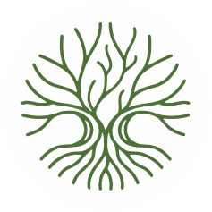

Awards & Achievements
2024
Presented work at Elev 8, organized by
Architects Diary, Ahmedabad.
2022
Outstanding Hospitality Landscape Design Firm of the
Year,
Gujarat — Design Awards India.
2022
Promising Commercial Interior Design Firm of the Year,
Gujarat — Design Awards India.
2022
Recognized among the Top 25 Most Promising Women Landscape &
Interior Designers in India — Design Awards India.
2017
Best Paper Award in Art & Design at the 2nd National
Conference — Innovating for Development & Sustainability,
Vadodara.
2010
Gold Medal for Best Performance across five years at
South Gujarat University, Surat.
2010
Gold Medal from IIID for cumulative performance
during five years of graduation, awarded by
Christopher Benninger, Surat.
2009
Pidilite Award for Excellence in Architectural Design,
awarded by Hasmukh Patel, Ahmedabad.
Our Design Philosophy
• Landscape design harmonized with the topography of each site.
• Rustic interiors that blend naturally with the lifestyle of residents in homes and
employees in workspaces.
• Designs rooted in local culture, materiality, and sustainability.
• Philosophy: Design that grows from the land, for the people living and working on
it.
Our Key Objectives
• Brand Awareness: Position Seeking Roots as a niche, thoughtful
design studio specializing in contextual landscape architecture and rustic
interiors.
• Engagement: Build an online community of design enthusiasts,
potential clients, and collaborators.
• Lead Generation: Convert interested viewers into inquiries for
projects.
• Thought Leadership: Establish Seeking Roots as a voice in
sustainable, contextual design.
Who We Design For
• Homeowners looking for personalized, natural, rustic living
spaces.
• Corporates & institutions wanting employee-friendly, biophilic
workspaces.
• Real estate developers & hospitality businesses (resorts,
retreats).
• Design enthusiasts & architecture students.
Platforms & Approach
LinkedIn:
• Showcase professional expertise, case studies, industry insights, awards, and
collaborations.
• Tone: Professional, thoughtful, design-driven.
Instagram:
• Visual storytelling through project images, reels (before/after, design
walkthroughs), mood boards,
behind-the-scenes of design & construction.
• Tone: Inspirational, creative, lifestyle-oriented.
Facebook:
• Share longer posts, community engagement, events, blog links, and client
stories.
• Tone: Informative, approachable.
What We Talk About
1. Project Showcases – Highlight completed and ongoing
works.
2. Design Philosophy – Posts on how designs respond to topography,
culture, and
lifestyle.
3. Behind the Scenes – Sketches, site visits, material sourcing,
team culture.
4. Tips & Insights – “How rustic design improves living”, “Blending
indoors &
outdoors”, “Using local materials wisely”.
5. Client Stories & Testimonials.
6. Sustainability Focus – Native planting, natural ventilation,
water management.
7. Engagement Posts – Polls, Q&A, design trivia, seasonal
greetings.
Content Schedule
• Instagram: 4–5 posts + 4 reels per month.
• LinkedIn: 3–4 posts per month (thought pieces, project
features).
• Facebook: 4–5 posts per month (can overlap with Instagram but
adapted for audience).
• Stories (IG/FB): Regular weekly updates, quick engagement.
A Distinct Visual Identity
• Warm, earthy tones reflecting rustic design.
• Clean, minimal layouts with strong use of photography.
• Incorporation of sketches & raw textures.
• Consistent typography and brand voice.
Measuring Success
• Growth in followers & engagement rate (likes, shares, comments).
• Website visits/inquiries via social media.
• Audience quality (design professionals, potential clients).